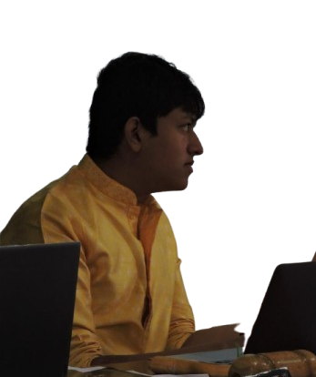
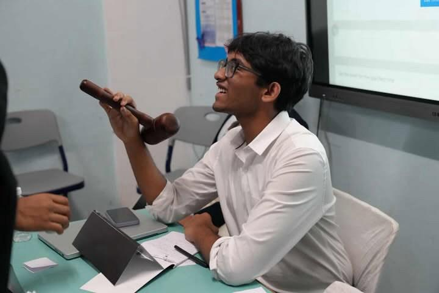
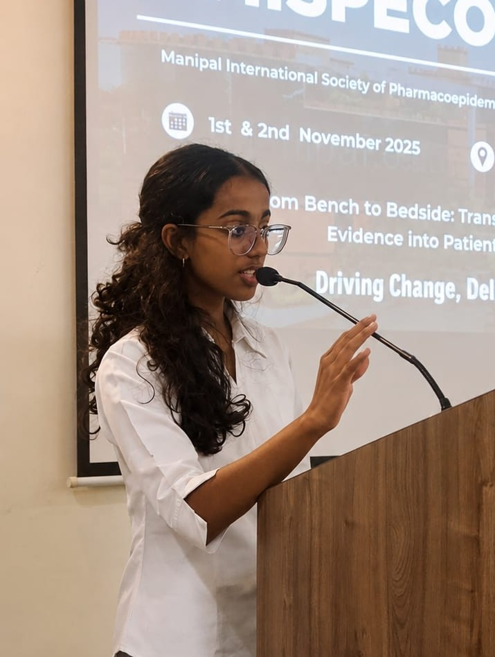
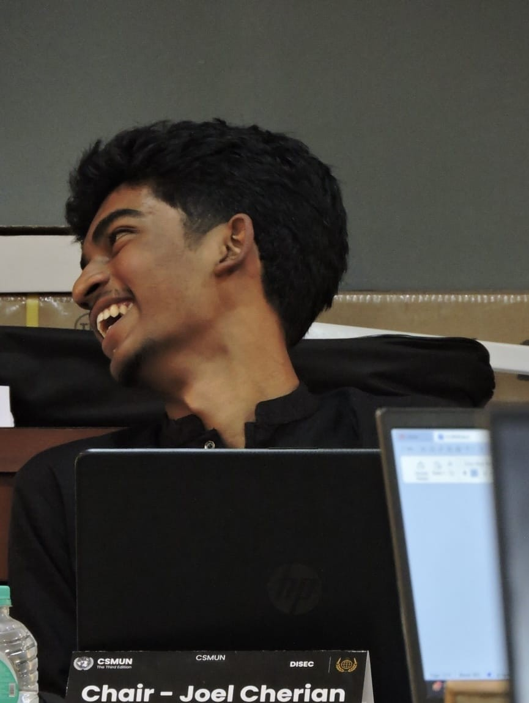
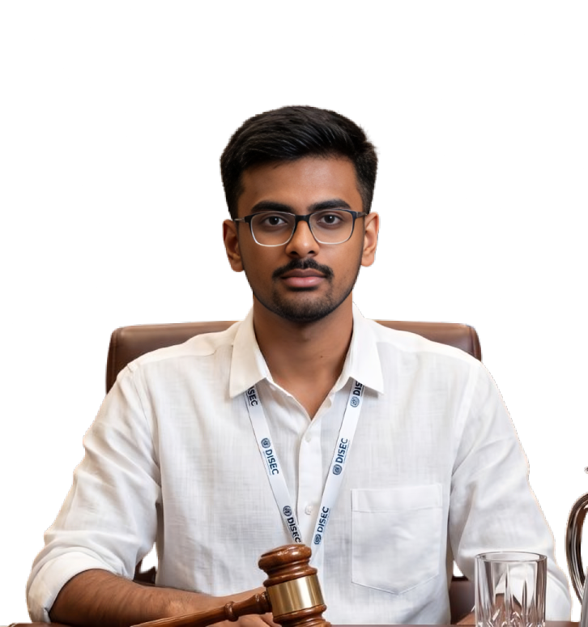
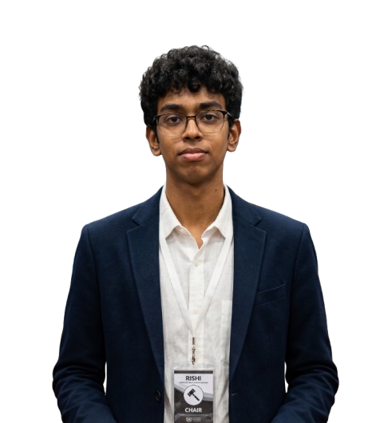
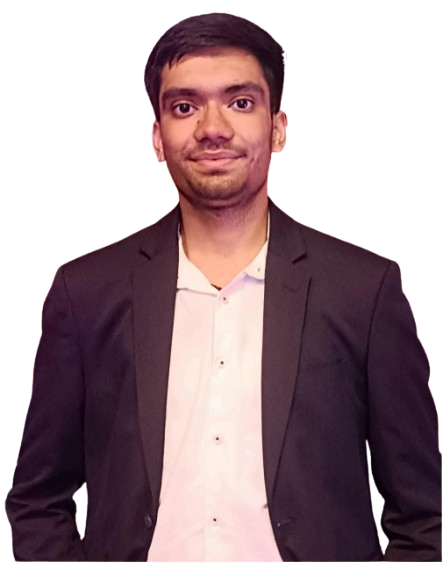

CSMUN 2026
CSMUN 2026
Meet the dedicated individuals driving CSMUN 2026 to excellence
The core leadership team responsible for the strategic direction and overall execution of CSMUN 2026.

Valivarthi Shree Deetya
Steering CSMUN 2026 with strategic foresight and unwavering dedication — orchestrating every facet of the conference to deliver an unparalleled experience rooted in diplomacy, leadership, and excellence.
Mahi Akula
Driving operational excellence and seamless inter-departmental coordination — working alongside the Secretary General to ensure flawless execution of every aspect of CSMUN 2026, from logistics to delegate engagement.
Nyshadam Amuktha
Guiding the conference's overarching strategic vision and seamless coordination across all committees — ensuring that every facet of CSMUN 2026 aligns with the highest standards of excellence and organizational precision.
Chirravuri Durga Vaishnavi
Managing the complete delegate lifecycle — from seamless registrations and thoughtful committee allocations to curating an enriching and memorable conference experience for every participant.
K. Shanmuka Sailesh
Steering the technical vision of CSMUN — architecting the conference website, overseeing digital infrastructure, and engineering a seamless technological experience for delegates, chairs, and organizers alike.
Dadi Sai Jaswanth
Managing end-to-end technical operations, architecting robust backend systems, and ensuring unwavering platform reliability to guarantee a smooth and uninterrupted conference experience.
Rishith Manchala
Leading frontend development efforts, crafting intuitive UI/UX designs, and shaping the visual identity of CSMUN to deliver a polished, engaging, and accessible digital experience.
Tanay Lothugedda
Building and nurturing CSMUN's external presence — forging strategic partnerships, managing delegate outreach, and ensuring clear, impactful communication with all stakeholders to broaden the conference's reach and reputation.
Kanishka Choudary
Crafting the visual identity of CSMUN 2026 — designing striking graphics, compelling social media content, and cohesive branding that brings the conference's vision to life across every platform.
Yendreddi Hasini
Shaping the aesthetic soul of CSMUN — producing engaging visual assets, curating a consistent brand experience, and designing creative content that captures the energy and prestige of the conference.
Loukhya Doppulapadi
Overseeing academic quality and committee content.
Abhiram Paritala
Managing logistics, venues, and operational excellence.
Chinmayaa Vedansh Upadhyayula
Managing operations, venue coordination, and conference logistics.
Navaneeth Nalabothu
Managing operations, delegate coordination, and conference execution.
Debadrita Chakraborty
A sincere, creative, and responsible individual with a keen eye for detail. She is the author of a published book and enjoys reading, listening to music and podcasts, graphic designing and photography. She believes in approaching every responsibility with professionalism, integrity, and dedication.
The committee chairs and vice-chairs guiding debate and ensuring productive sessions.
 UNSC - United Nations Security Council
UNSC - United Nations Security Council
Sai Dheeraj
An incoming Computer Engineering student at Indiana University Bloomington. Having served on the Executive Board of several MUN conferences, he enjoys creating committees that encourage meaningful debate, collaboration, and critical thinking. Outside committee, he enjoys watching movies, spending time on Minecraft, and keeping up with the latest in technology. He looks forward to an engaging conference and hopes every delegate leaves with an experience worth remembering.

Sujay Krishna Valluri
An aspiring finance student at the University of Wisconsin–Madison with a passion for money, economics, and diplomacy. Outside committee, he can be always seen supporting Luka Dončić and the Lakers, watching McLaren compete in Formula 1, or binge-watching Suits for the hundredth time. With several years of MUN experience as both a delegate and board member, he is eager to serve as your Vice-Chair and looks forward to an engaging and productive conference.
 UNHRC - United Nations Human Rights Council
UNHRC - United Nations Human Rights Council
Shreyal Kothapalle

Michelle Samuel
A Pharm.D student by profession (and survival), which mostly means she has become very familiar with deadlines and checklists. Somewhere between coursework, event planning, volunteering, and club commitments, she still believes she can take on "just one more thing" — a theory that has been repeatedly tested. After a year away from MUN, she is excited to return, this time on the other side of the dais, as the Vice Chairperson for UNHRC. She is looking forward to good debates — so bring your best arguments, and your worst puns.
 DISEC - Disarmament and International Security
DISEC - Disarmament and International Security
Joel Cherian
A first-year student at St. Stephen's College, University of Delhi. His interests sit at the intersection of strategy, global affairs, and the economics of technology — a lens he brings to everything from financial markets to geopolitics. He looks forward to serving as Chairperson for DISEC at CSMUN 2026.

Pranav Reddy Karnati
A BBA(Hons.) Finance student at Woxsen University. His interests lie in finance, international affairs, public policy, and sports. He enjoys exploring how diplomacy, public policy and artificial intelligence influence global affairs. Serving as the Co-Chairperson of DISEC at CSMUN 2026 is very special to him, as Cornerstone School was where his MUN journey began. Returning to the Executive Board at Cornerstone for the second time is a full-circle moment for him, and he looks forward to encouraging meaningful discussions and debates while ensuring an enjoyable committee experience for every delegate.
 LOK SABHA - House of the People
LOK SABHA - House of the People
Likhit Rishi

Riya Nagrale
 IP - International Press
IP - International Press
Ishita Venigalla
An aspiring lawyer who has been in the MUN circuit for a few years, with experiences ranging from delegate, reporter, EB member to Secretariat. A writer by instinct and a speaker by passion, Ishita has a flair for storytelling — whether on paper, behind a mic, or in her head at 2 a.m. when she is trying to fall asleep. When not buried in assignments, you will find her knee-deep in a true crime documentary or a book's fantasy land. She looks forward to making this a fruitful experience!

Debadrita Chakraborty
Debadrita Chakraborty is a sincere, creative, and responsible individual with a keen eye for detail. She is the author of a published book and enjoys reading, listening to music and podcasts, graphic designing and photography. She believes in approaching every responsibility with professionalism, integrity, and dedication. She is looking forward to the role of Vice Chair for the International Press at CSMUN 2026.
 BCCI - Board of Control for Cricket in India Committee
BCCI - Board of Control for Cricket in India Committee
Soumya Sahoo
Quite the silent diplomat who believes more in thoughtful debate and quiet contemplation than aggressive power-delegating, Soumya is a firm believer in the power of collaboration and shared insight as a means to growth. An avid reader and a deeply emotional musician and poet by heart, he enjoys basking in the beauty of classic novels, Bollywood songs and shayaris of renowned poets. If you do not find him devouring science journals, or cuddled up with a nice novel, you can probably find him watching tennis, cricket, or daydreaming about which dish he should try on his next trip.
Tanay Lothugedda
Tanay is a student who does MUN and also handles outreach for CSMUN. He has been to a few conferences and knows how things work. He will be the Vice Chair for BCCI and will try to help delegates have a decent committee experience. He likes sports and talking to people.
The backbone of CSMUN — managing logistics, operations, and delegate experience
Managing delegate registrations, allocations, and confirmations
Creating graphics, social media content, and visual identity
Venue management, accommodations, and on-ground operations
Delegate correspondence, emails, and query resolution
Building the website, digital infrastructure, and visual experience